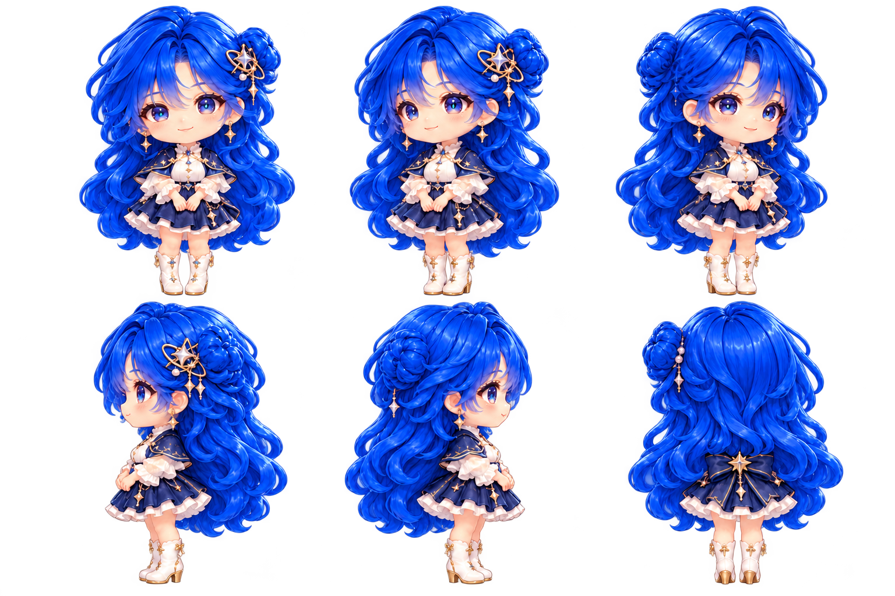
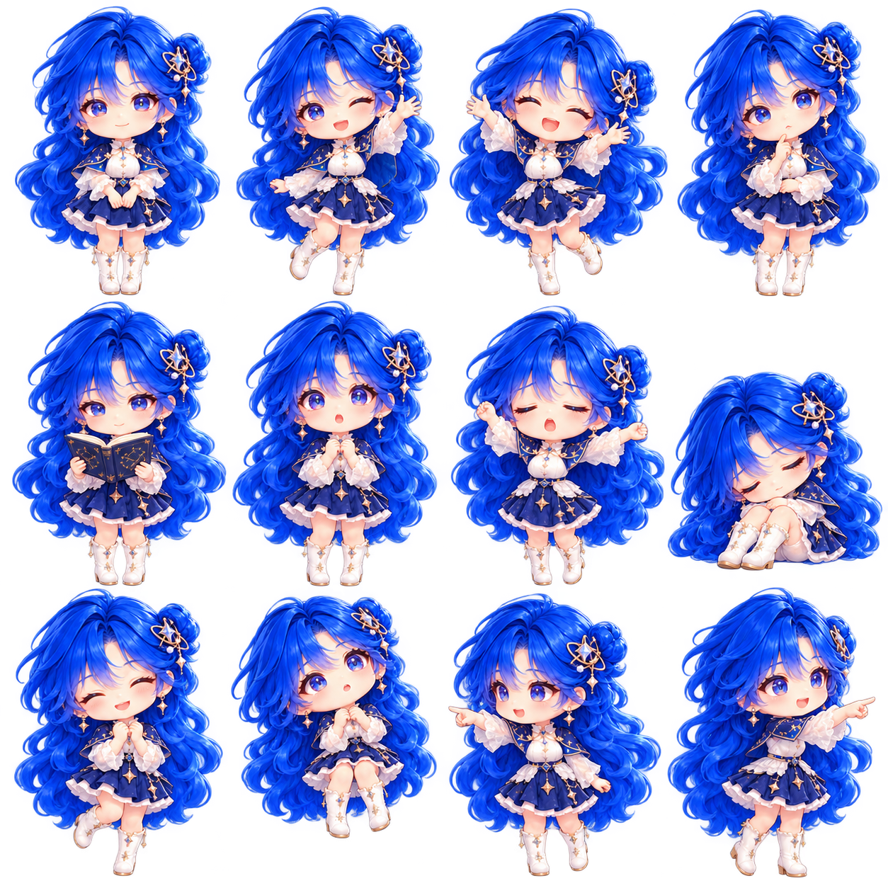

一颗星，陪你把今天过好
你好，我是星璇。
安静陪在你身边
专注的时候安静陪着，完成的时候一起开心。
按你的节奏，一次做好一件事。
消息小纸条
出发去星匠
同一位星璇，也在网站等你。
把注意力，留给眼前这一件事
一起专注
准备好了就开始
25:00
待办与提醒
创作任务
通过本机事件桥接收编程或生成任务。只有携带会话令牌的本机请求可提交状态。
接入方式
事件桥默认关闭，可在偏好中开启。
愿意说的时候，我就在这里
聊一会儿
配置自己的模型服务后开启对话。未开启时，专注与陪伴照常可用。
仅在发送下一条消息时附上这张截图。
需要确认的操作
星璇只执行这里明确列出的操作。先查看，再确认。
由你决定，哪些值得记住
记忆手册
记忆只保存在本机；你可以修改、忘记和导出。只有勾选使用记忆时才随对话发送。
同一颗星，更多相处的模样
星璇图鉴
保留原版动态精灵，多视角母图用于角色设定与后续动作制作。
陪伴的样子
每一次真实的专注，都留下一点星光。
移动默认关闭。拖动、专注、收纳、隐藏和全屏暂停优先。
六个视角

头饰固定在角色自身左侧，左右视角不能直接镜像替代。
日常姿态

角色包工作台
导入本地图集，预览动作并调整每帧时长、语义与地面锚点。校验后将图片和元数据一起导出为 ZIP。
自定义角色在本机保存，优先于内置外观选项。
让陪伴，刚好适合你
偏好与连接
怎么称呼你
可选智能服务
使用兼容 OpenAI 协议的服务地址。密钥仅进入主进程，系统加密不可用时只保留到本次退出。
数据与启动
偏好文件只包含外观与安静选项。私人记忆、对话、API Key 不会进入站宠。